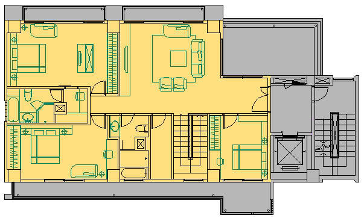
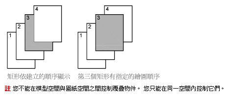

各位大家好，最近在描繪地籍圖時，為了讓建築物有一色塊的展現，但是仍需要有建築線的間隔，請問如何將色塊置在最下面，讓建築線的線條能夠展現出來，（嘗試使用工具→繪圖順序 的方式將色塊至到物件最下方，並按下RE重繪，但是並沒辦法），可否麻煩大家了！

依照你的需求很單純，使用 繪圖順序 視最理想的，而在於你的用法是否正確，你可以使用 置於最下方 後，選取 顏色為33 地底色物件即可。
請參考以下操作相關說明，有問題請再提~
※※※ 以下方法適用於 AutoCAD 2004 以上版本 ※※※
請使用「繪圖順序工具列」DRAWORDER指令 →「置於最上方」....選取欲移動的圖層物件即可。
PS:建議將圖層分類後，搭配 圖層工具列 即能發揮最大效率。
----------------------------------------------------------------------------------------------
※控制覆疊物件的顯示方式:
一般而言，覆疊物件 (例如，文字、寬聚合線與實面填實多邊形) 以它們的建立順序顯示：新建立的物件位於既有物件的前面。
您可以使用 DRAWORDER 來變更任何物件的繪圖順序 (即顯示與出圖順序)。
TEXTTOFRONT 變更圖面中所有文字與標註的繪圖順序。
資料來源:AutoCAD2007說明
----------------------------------------------------------------------------------------------
※動態操作步驟如下:有問題請再提
https://www.youtube.com/watch?v=tG5LYvdC1PQ
※一般繪圖順序的運用，在各領域各有不同的用途，以建築圖為例:
1.以下標準層平面圖，依室內、室外、結構體、線稿及文字來區分使用空間。(附圖一)

2.使用剖面線(HATCH)的SOLID樣式來進行上色的動作，因作圖時順序不同，各顏色區塊順序可能不對。(附圖二)

3.此時，繪圖順序工具列則是一個理想的幫手，先把所有物件的順序分解出來，再逐一進行物件順序的排列即可。(附圖三)

----------------------------------------------------
您可以控制哪些覆疊物件要顯示在頂端。
一般而言，覆疊物件 (例如，文字、寬聚合線與實面填實多邊形) 以它們的建立順序顯示：新建立的物件位於既有物件的前面。 您可以使用 DRAWORDER 來變更任何物件的繪圖順序 (即顯示與出圖順序)。 TEXTTOFRONT 變更圖面中所有文字與標註的繪圖順序。

資料來源：AutoCAD 2006 使用者說明
補充：
關於剖面線其實也可以使用 巨集(快狠準) 來快速置於最下方~
巨集語法+LISP語法:
^C^CDRAWORDER;(SSGET "X" '((0 . "HATCH")));;B;REGEN;
說明:過濾選擇剖面線，再將其置於最下方
補充：AutoCAD 新版本有提供HATCHTOBACK指令。有自帶（內建）icon

另外可以參考以下教學說明:
[教學]HATCH剖面線的繪圖順序